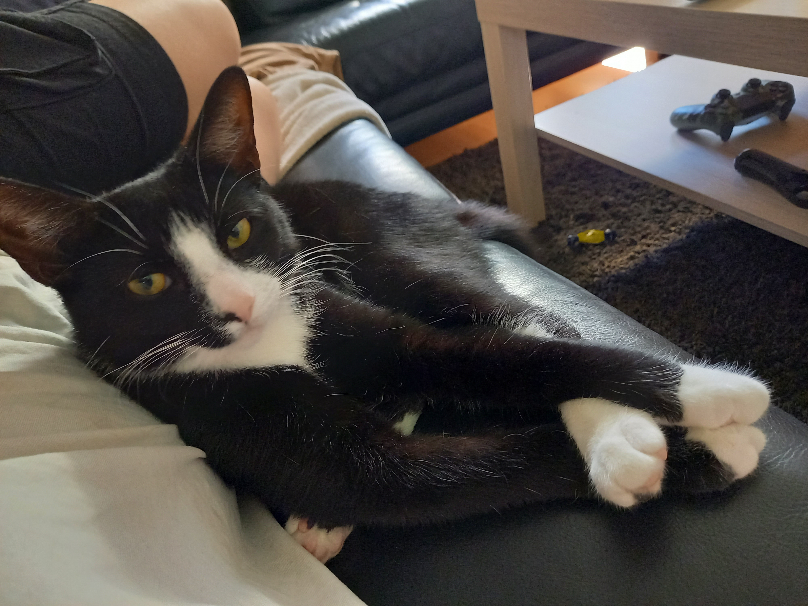

Emelies fantastiska hemsida, nu med HTML-guide för nybörjare!
Här blandar jag lite eget med en guide för hur man gör en egen hemsida. Sidan är under konstruktion så ni får ha lite tålamod! För att komma till min HTML-guide kan ni använda menyn eller klicka här. Mitt senaste avsnitt handlar om att lägga till bilder och länkar. Under tiden kan ni avnjuta en bild av min katt Floki.
